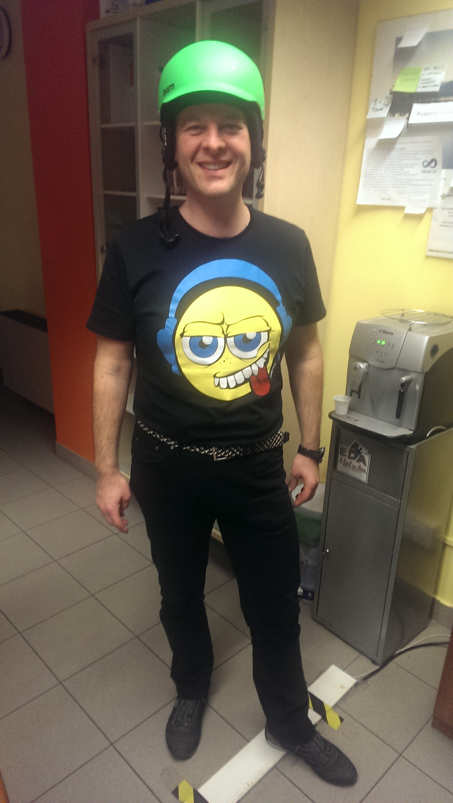

11 telecamere di evision
Beppe:
«Vado su per vedere con mano»
Il meglio del meglio di Albert... e non solo
Una raccolta delle migliori perle, citazioni memorabili e momenti indimenticabili.
Le perle più recenti, direttamente dall'ufficio e non solo.
Beppe:
«Vado su per vedere con mano»
«È giunto il momento di prendere il coro per le torna.»
Si tratta di un fulmine molto violento dal dizionario Dariesco→Italiano.
Commentando il video musicale dove suo figlio è attore… tutto giusto… ma detto da Albert…
«Su Brescia Oggi di ieri…»
«…senza conoscere un cazzo ZERO.»
Albertese:
«Betù du pas.»
Italiano:
«Mi sono recato presso il concessionario "Bettoni" per portare la mia motoretta Vespa 50.»
«… per quello che noi partiamo apposta dall' uno del mese prima!»
Il titolare ha chiamato ed al telefono ha risposto “un nero”.
I negobar con le scritte in arabo. (zippato negozi e bar)
«… con gli Extracomunicari.»
Il 730 online è quello che, ti colleghi, e trovi il 740 precompilato.
«Le ricette alettroniche»
«I test di accettazione vuol dire sì sì sì»
«Bisogna stare attenti ai Bad Blocks»
«Finalmente Ti sei SBRESCIATO.»
Beppe:
«Purtroppo anche io non ho la SFERA MAGICA»
(sfera di cristallo + bacchetta magica = sfera magica)
Massoli:
«mia cognata sta a Torito»
Zippato: a Torino col marito
Albert:
«ma voi stasera venite vestiti da calciatori?»
Risposta di Mauro:
«no, io vengo vestito da Zorro»
Mauro Berretta:
«Quindi questi …» = «QUISTI»
Pulsante = POLSANTE
Albert: “Attento a non sederti…”
5 secondi di pausa….
Albert: “Già che sei in piedi…”
«Pronto sono Daniele… ah no, sono Dario.»
«Se non sai, non chiedere.»
«Senza scendere dalla groppa della tigre. Perché ci si può far male.»
… può diventare soltanto:
«Il pento terso.»
Un anno di scrum. Il miglior titolo dello sprint:
«Le Regioni Confognanti» — 27% 🏆
Finalisti: La canna di natale (13%), Fiiiinchia!! (13%)

«Nel gioco del me-Monopolo»
«Per far questo che arriva la domanda e.»
«LIBWINZEN»
«O tagliamo il toro…»
«Non è che io sono Ricetta Elettronica.»
«Clausola del salvaguardia.»
«Se io sono due pezzi di Aulin…»
«Gli mandiamo un messaggio che gli dice: "no, non puoi".»
«Un problema non devi dirlo come un problema»
«Codice istituzione compotente»
«Le due date di nascite»
«Per ora dopo, sono cazzi suoi.»
Beppe:
«E' inutile piangere sulle lacrime versate.»
Fabio:
«Se l'inserimento dei caratteri speciali fosse disinibito.»
«I vigili alle 4.30 avevano già fatto tutto i vigili…finchia»
«…perché il treno è come il metrò… però sopra»
«Non sapendolo, ci guarda, e dopo lo sa.»
«Sono pronte li cosi.»
«Il PRADOC» [n.d.r the product]
«I ciclisti son passati sotto ad una strada a 6 colonne.»
«C'è un però, un ma, un se.»
«Questo gatto è grigio tendente al rossiccio…»
«Chi semina vento, raccoglie vento.»
«In quei 5 lì quanti siamo al massimo?»
«Tutti questi controlli li stiamo affinando e quindi li affineremo.»
«Vanno giù con una specie di CAFANDRO»
C'è uno che ha fatto le pratiche x diventare Re del suo scoglio.
(Raccontando vicende di rifiuti tossici in Somalia)
«Ci sono le riprese degli astenauti sulla luna.»
«Quando noi siamo qui che io sono là e lui è lì…»
«Disegnini, dato, detto, tutto.»
«Sono state pubblicate le vecchie lib vecchie.» (rafforzativo)
Albert:
«Dubito che i nostri clienti navighino su FEISBUS»
«Si parte alla Mezzanotte… di sera.»
«Le major relix»
«Le cotocombe»
«Non avete voi gli argomenti di parlare?»
«Non puoi lasciare lì il sasso che galleggia»
«Nel 1999… fine anni 2000…»
«Le 'Piattiforme'»
– Albert –
«Vedi quell'icona in alto con la 'E' di DOLLARO!»
– Panet –
«Ho capito adesso: "A star dentro, avrà preso salcazzo".»
(Starteam)
«… se ghiaccia il ghiaccio…»
«Migliaia di dollari di euro»
«Ognuno il suo i gestionali se lo fa alla sua maniera.»
«La banca dati è LUNGA un Giga.»
Albert:
«… ma va bene anche per gli ESTERI?»
(Stranieri?)
Albert:
«Ho fatto un bel giro della PRASALANA.»
(Il riferimento era alla Presolana)
Albert:
«Dobbiamo completare delle cose su delle cose che non sono state completate.»
cit. del 10/09/2008
Albert:
«… questo progetto praticamente deve ancora iniziare nella pratica.»
Rivolto a Fabio:
«Ci vediamo lì alle sorelle tua»
Traduzione: Ci vediamo davanti al ristorante di tua sorella.
Direttamente da casa Cretti arriva nelle vostre case il:
«DOLBI SARRAUND»
Famoso e comune detto:
«Lo mettiamo in castagna»
In uscita in tutte le sale!
«Una delle cose fondamentali da comprare sono i PANNARELLI per colorare.»
Dalle fantasmagoriche idee linguistiche di Alberto è nato un nuovo medicinale:
«TACAPARANA»
Nuovo 'detto' alla Beppe…
«tenere stretto il palo nel culo»
Albert:
«L'ingresso costava 15 euro per i grandi e 12 euro per gli adulti.»
«E' come se uno avessero 6 dita…»
«C'erano giù i 'mezzi metri' di neve…»
Vista l'urgenza, Beppe ordinò a Fabio:
«Fai anche tu lo spaccanoci.»
«Tieniti stimolato…»
«… se devo scegliere in male peggiore…»
«Fai il PORTINIERE!»
(ovviamente si riferiva al portinaio)
«L'OPPODROMO.»
«'sate 'ficio lì»
Traduzione: “Scusate. Il nostro ufficio è lì.”
«Zù a Piazenza….»
«… urco … ci sono la festa degli alpini a Parma ?»
«Partiamo tutti con la Moltivolume»
«Prepariamo tanti files ZIM»
«In mezzo a tutti pianti di limoni»
(Albert)
«Asterisco, e' proprio una cosa che vuol dire ogni.»
«Bnsugcnssbuco»
Traduzione: “Buono il sugo con l'osso buco.”
«… intorno a Cesena ci sono pieno di collinette …»
Una che si chiama Caglio…. fa i formaggi.
– AC –
Amici vicini e lontani, ci siamo!!!! Dopo mille peripezie il blog più indispensabile della rete è qui!
Aggiornate in tempo reale troverete le battute più belle dell'uomo che tutti gli uffici vorrebbero avere!
– SF Team –
Le conversazioni telefoniche leggendarie del 1994. Ogni chiamata, un capolavoro.
«Mi raccomando, domani, accertificati che Poli dia il biglietto a Ragni.»
«… c'è da voi il Signor Ingenier Monteverdi?»
«… adesso se mi chiami con il mailbag dopo…»
«Metti dentro il primo qualunque…»
«… se l'avrebbe fatto, l'avrebbe detto …»
«… non è come una stampa, ma è più di una stampa come se fosse una stampa» (n.d.r print screen)
«… tu inserisci la tua ricetta, come normalmente …»
«… io il tempo a me non mi interessa»
«… sì, glielo passo subito, è rientrato appena da poco…»
«… la lucetta della luce CAPS LOCK appare spenta …»
«… si salvava ogni volta 1 anno di salvataggi …»
«… non tiene costo dei costi»
«… non t'ha stampato dicendoti che ti diceva che aveva cambiato prezzo?»
«… lui è sempre fuori, in giro, per cui si trova solo lì, praticamente !!»
«… io procedo così, poi se ci sono delle controistruzioni …»
«… se lo sapessi non farei il programmatore, farei il mago …»